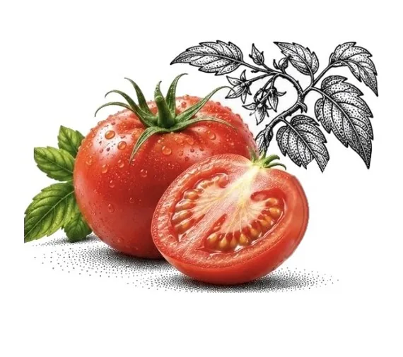
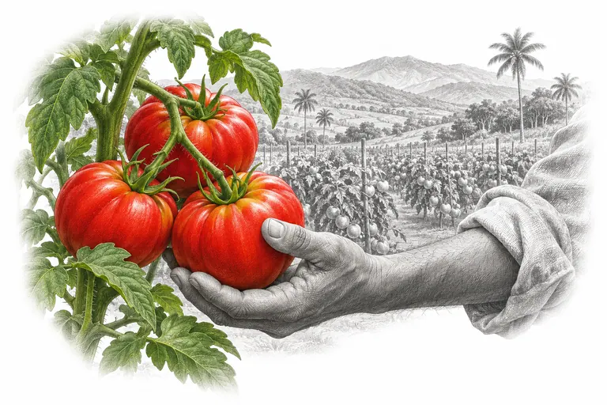
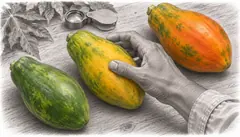
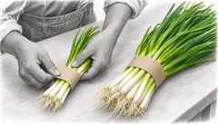
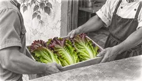
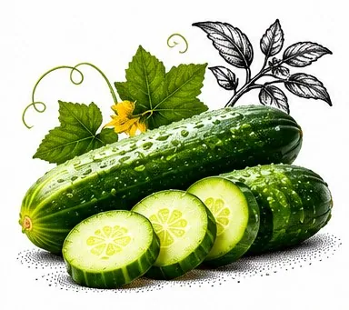
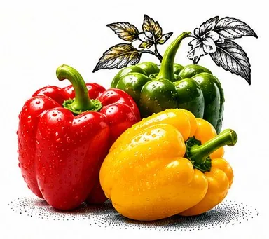
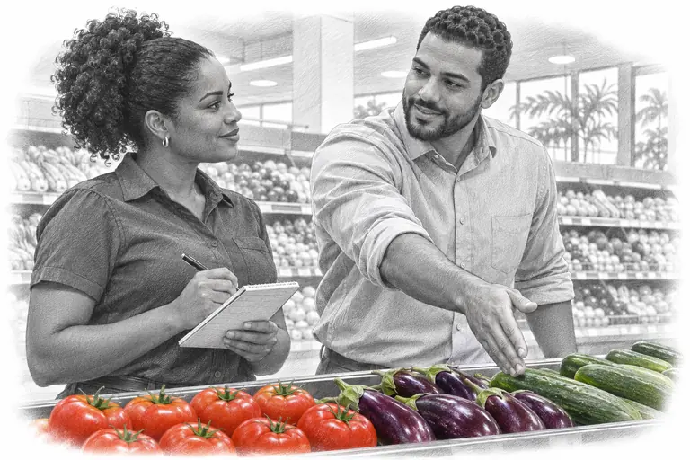

Tomates

Frutas y vegetales seleccionados para supermercados de República Dominicana.
Conoce nuestros productos

Elige la variedad y el punto de maduración que buscas.

Consulta los formatos para tu góndola o tu cocina.

Dinos dónde recibes tu pedido y acordamos los detalles de la entrega.



Variedades de ejemplo - el catálogo final se construirá con la oferta real de Go Veggie Life.
Abastecemos supermercados, cadenas y distribuidores con un portafolio confiable, variado y de alta rotación.
Hablemos de tu negocio ¿Hotel o restaurante? Ver formatos para cocina